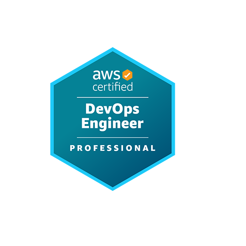

Resume
Curtis Koster
Cloud Architect
Quick jump: Education | AWS Certifications
About Me
I design Cloud Solutions, author AWS Exams, and philosophize about the future of cloud. I have a passion for building scalable, secure, and innovative cloud solutions that empower businesses to achieve their goals. With over 10 years of experience in the industry, I have a proven track record of delivering high-quality cloud architectures and contributing to the development of AWS certification exams. I am dedicated to continuous learning and sharing my knowledge with the community through writing and speaking engagements.
Work History
Senior Cloud Architect
Federal Reserve System IT Excellence Award
Recognized for architecture and engineering contributions in response to designing and leading the implementation of new automation for AWS account management. The automation provides a scalable and repeatble process for the creation and management of AWS accounts.
Internal Speaking Engagements
Created and ran an AWS Sagemaker workshop and guided attendees through the process of building and deploying a model with SageMaker.
Presented at a data scientist focused internal conference and shared research and findings with attendees.
Secure Enclaves & Payment Technology
Implemented a payment processing prototype solution that leveraged custom Docker containers and AWS Nitro Enclaves to securly handle the processing of transactions. Created a basic HTML front-end to simulate the user experience.
Researched credit card fraud and support developing a Python based solution for generating synthetic transaction data to be used for testing fraud detection algorithms. Supported the publishing of CardSim: A Bayesian Simulator for Payment Card Fraud Detection Research which presents this work.
AWS Platform Architecture
Provided cloud architecture consultations with internal teams across the System. Reviewed proposed architectures for cost, security, and well-architected.
Designed and led the implementation of a cross-AWS partition event drive architecture for the creation and management of both AWS Gov Cloud and Commercial AWS accounts.
Designed and implemented an internal, standard pattern for automating across both AWS Commercial and Gov Cloud partitions.
Designed and led the implementation of an AWS native/event-driven architecture to centralize AWS generated logs from both AWS partitions
Responsible for meeting with and advising internal cloud engineering teams on best practices and design decisions for their cloud architecutre.
Responsible for reviewing AWS service functionality and crafting SCP statements to implement guardrails to guide the usage of certain AWS services.
Responsible for purchasing AWS Saving Plans and configuring cost management strategies at the Organizational level.

Solution Architect
Firewall Automation
Created an event drive flow - that upon the creation of a new AWS VPN Tunnel - the .XML tunnel metadata was exported to S3 and a Step Function ran that configured EC2 based Firewalls with the tunnel configurations.
Client Facing Work
Implemented custom Python based for clients following an object oriented design pattern with corresponding unit tests.
Met with and advised clients on their cloud architecture and design decisions.
Presented a Machine Learning overview to invited customers at an AWS ReInvent evening event.

Software Engineer
SSO Login Solution
Created a Lambda SSO function that was used across internal tooling solutions to authenticate corperate users into internal applications.
Cloud Deployment Platform
Used Go to create a custom IaC framework. Framework created a process to deploy a co-ordinated set of CloudFormation templates into a given AWS account. Created a S3 static webpage that used Cognito for deployment teams to log into and manage their set of deployed templates. Captured and provided metrics on deployment details.
EC2 Management System
Created an AWS S3 static website front end with React and an AWS serverless (Lambda/Step Function/DynmoaDB) backend. Cognito user pool tied users to groups. Groups could define schedules for their AWS accounts to adjust appropriately tagged Auto Scaling sizes and the starting/stopping of EC2 instances. Used by multiple teams across the globe. A weekly job used the schedule information to created an executive report on costs associated with the of the managed infrastructure.
Education

Masters in Computer Science
Projects
Created a pattern recognition solution - given a series of objects, determine the next object in the series.
Leveraging past S&P500 data - created a trading algorithm that used technical indicators to make buy/sell/hold decisions.
Evaluated and compared the performance of various families of ML algorithms including Reinforced Learning, Supervised, and Unsupervised algorithms against provided data sets.
Alumni Activities
Participated in Computer Science Industry Round Tables with current students.
AWS Certifications
AWS Certified DevOps Engineer – Professional

AWS Certified Generative AI Developer – Professional
Industry Recognition
AWS 2025 Top Performing Subject Matter Expert
Recognized by AWS Training & Certification as a Top Performing Subject Matter Expert. During the 2025 calendar year, I contributed to the beta creation of the GenAI Developer Professional certification and continued support of the DevOps Engineer Professional exam.
Skills
AWS
Go
Python
Terraform
FinOps
DevOps
AWS Well-Archicted Framework